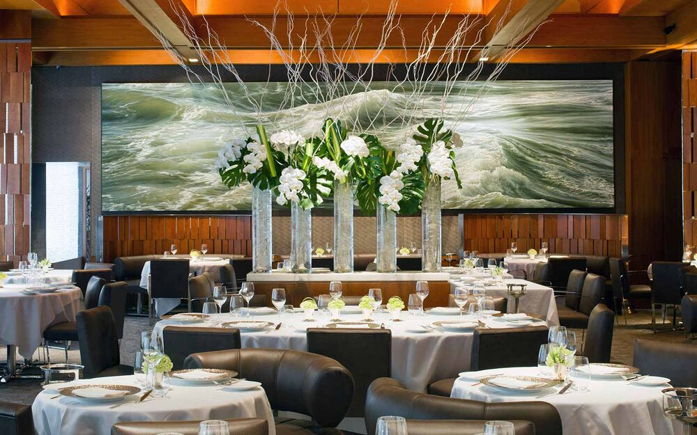
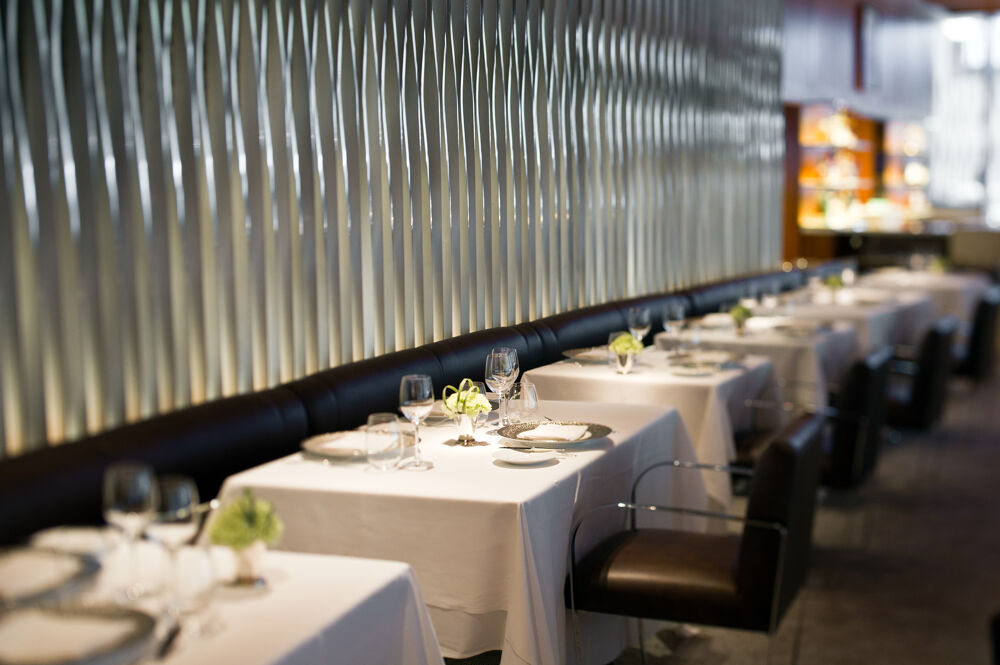
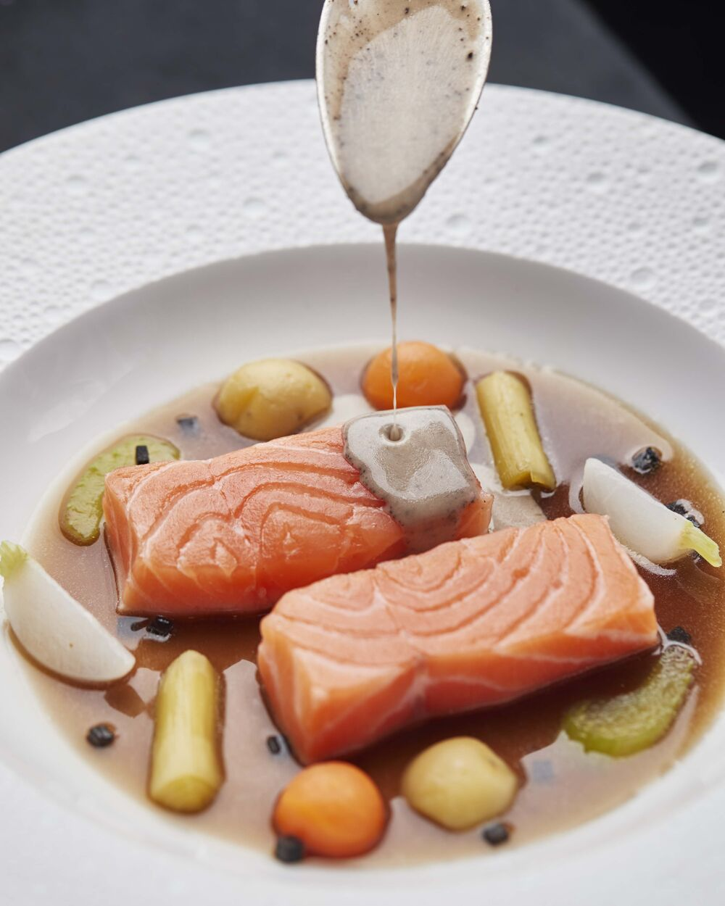
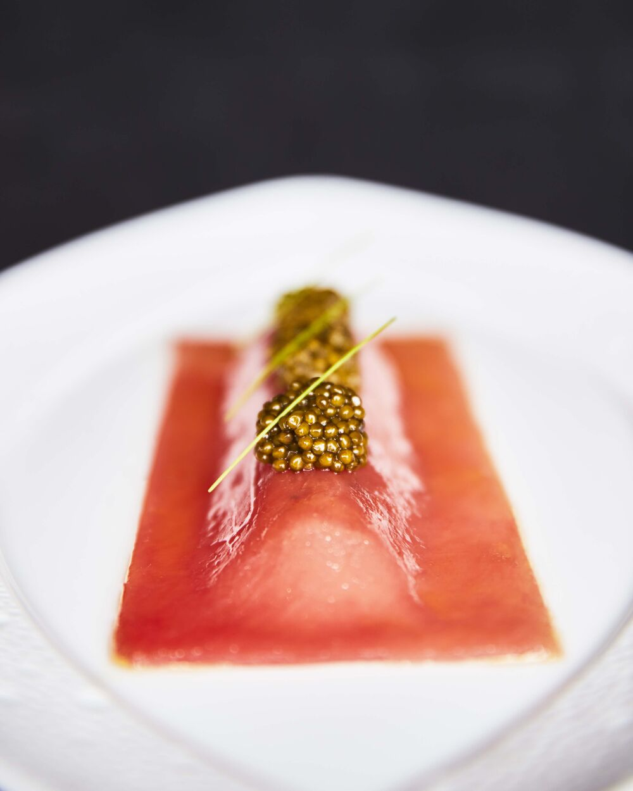
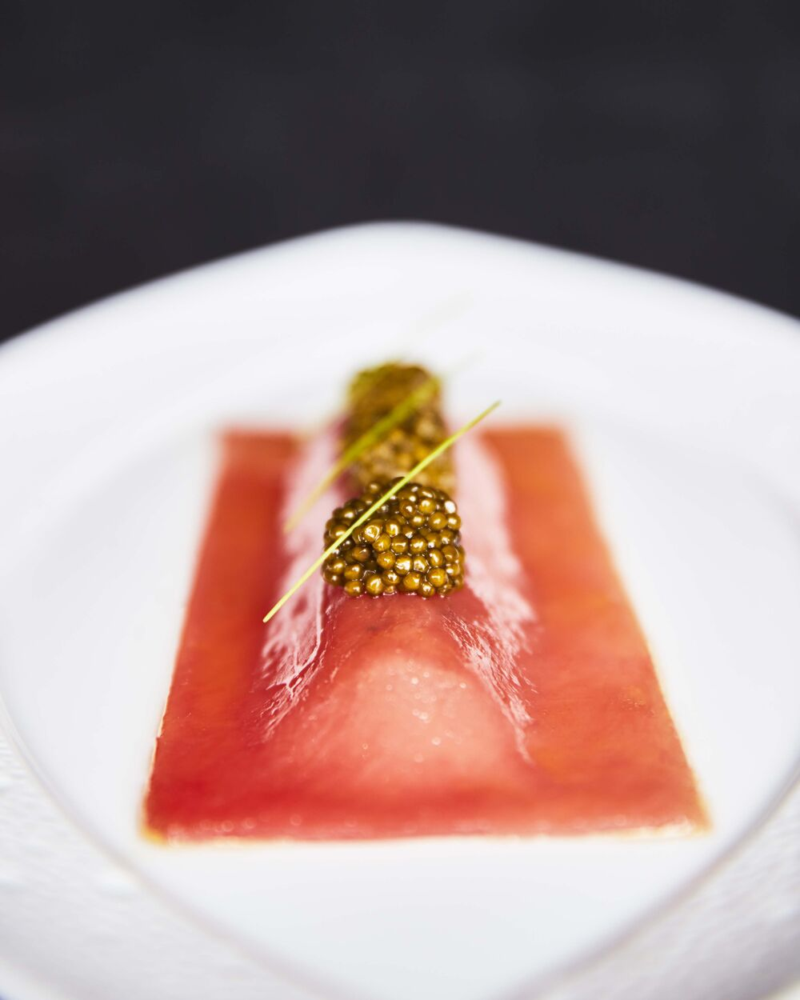

Inside
 Food
 

About
Le Bernardin is a French seafood restaurant in Midtown Manhattan in New York City. Gilbert Le Coze and his sister Maguy Le Coze started the restaurant in Paris in 1972, where it was called Les Moines de St. Bernardin. They restarted the restaurant in New York in 1986, not long after receiving a third Michelin star.
MICHELIN Guide’s Point Of View
When the definitive history of NYC's dining scene is written, Le Bernardin will have a chapter all to itself. Maguy Le Coze and Eric Ripert’s icon has been entertaining the city’s movers and shakers for over 20 years and its popularity remains undimmed.
As soon as you step inside you are enveloped in a warm embrace. Lunch is busy with those who know what they want and trust this well-oiled machine to deliver it in the time they have. Come at dinner for a more languid affair. The menu is divided into headings of “Almost raw,” “Barely touched” and “Lightly cooked,” but don’t be fooled, these product-driven items have considerable depth. Seafood restaurants have no hiding place when it comes to cooking fish or crustaceans and this kitchen always hits its marks—whether that’s poaching halibut, pan-roasting monkfish, baking striped bass or searing tuna.
While seafood remains Ripert's passion, his vegetarian tasting menu makes waves with dishes like the Himalayan morel, spring pea and fava bean casserole or the warm artichoke panaché with vegetable risotto and Périgord black truffle vinaigrette. Bid this spread adieu over coconut mousse with shavings of caramelized pineapple.
Information
- Phone: +1 212-554-1515
- Location: 155 W. 51st St., New York, 10019, United States
- Website: https://www.le-bernardin.com/
- Opening hours: Closed: lunch: Saturday, Sunday